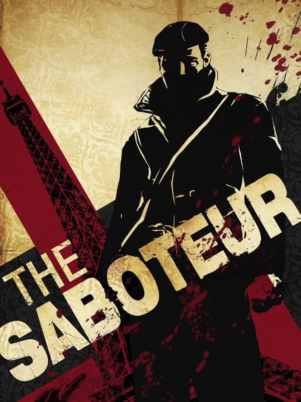

The Saboteur
The Saboteur
Detalhes
 |
|
| Tempo de jogo | Não Jogado |
| Última Atividade | Nunca |
| Adicionado | 07/06/2026 0:35:51 |
| Modificado | 07/06/2026 0:45:29 |
| Status de Conclusão | Not Played |
| Biblioteca | Steam |
| Fonte | Steam |
| Plataforma | PC (Windows) |
| Data de Lançamento | 04/12/2009 |
| Pontuação da Comunidade | 72 |
| Avaliação da crítica | 78 |
| Pontuação do Usuário | |
| Gênero | Adventure Role-playing (RPG) Shooter Tactical |
| Desenvolvedor | Pandemic Studios |
| Editor | Electronic Arts |
| Funções | Single Player |
| Links | Official Website GOG Wikipedia Twitch Steam Epic |
| Tag | |
Descrição
Nem toda guerra é travada em campo aberto. Faça download de The Saboteur para viajar à Paris dos anos 1940 ocupada pelos nazistas e jogue como Sean Devlin, mecânico irlandês de carros de corrida. Aliado à Resistência Francesa, Sean busca vingança pela execução de seu melhor amigo, comandada pelo impiedoso coronel nazista Kurt Dierker.
Neste jogo de ação e suspense com mundo aberto, você percorre as ruas decadentes de Paris enquanto tenta boicotar a autoridade militar alemã e incitar uma rebelião. Combata em telhados e becos perigosos e opere uma grande variedade de veículos para navegar pelo terreno. Você pode até escalar a Torre Eiffel ou a Catedral de Notre-Dame em uma missão de franco-atirador.
Use a furtividade e o disfarce para atacar o coração da máquina de guerra nazista desativando trens, destruindo pontes e explodindo instalações inimigas. À medida que você trabalha para expulsar as forças opressoras de partes da cidade, a paleta em preto e branco dá lugar a cores vivas, indicando que você inspirou a população. Quanto mais você influencia as pessoas, mais ajuda elas oferecem, interferindo em lutas ou arranjando uma fuga rápida para escapar dos alemães. The Saboteur apresenta uma nova visão da Segunda Guerra Mundial e inclui elementos cinematográficos dramáticos. Experimente toda essa ação e intriga fazendo o download no seu PC agora mesmo.
Recursos principais:
Neste jogo de ação e suspense com mundo aberto, você percorre as ruas decadentes de Paris enquanto tenta boicotar a autoridade militar alemã e incitar uma rebelião. Combata em telhados e becos perigosos e opere uma grande variedade de veículos para navegar pelo terreno. Você pode até escalar a Torre Eiffel ou a Catedral de Notre-Dame em uma missão de franco-atirador.
Use a furtividade e o disfarce para atacar o coração da máquina de guerra nazista desativando trens, destruindo pontes e explodindo instalações inimigas. À medida que você trabalha para expulsar as forças opressoras de partes da cidade, a paleta em preto e branco dá lugar a cores vivas, indicando que você inspirou a população. Quanto mais você influencia as pessoas, mais ajuda elas oferecem, interferindo em lutas ou arranjando uma fuga rápida para escapar dos alemães. The Saboteur apresenta uma nova visão da Segunda Guerra Mundial e inclui elementos cinematográficos dramáticos. Experimente toda essa ação e intriga fazendo o download no seu PC agora mesmo.
Recursos principais:
- A primeira Paris de mundo aberto — Escale a Torre Eiffel, atire da Catedral de Notre-Dame e lute na Champs-Élysées enquanto sabota seus inimigos. Lute, escale e percorra becos escuros, telhados, casas burlescas e ruas decadentes da Cidade Luz, um lugar cheio de possibilidades para um sabotador.
- A arte da sabotagem — Para sabotar, é preciso atacar e manter-se fora de vista. Obtenha informações para a sua missão em boates e cabarés clandestinos. Elimine seus adversários com ataques furtivos, disfarces, distrações e explosivos. Domine uma variedade de armas, automóveis e habilidades para sabotar as operações inimigas.
- Motivação para lutar — Essa experiência cheia de ação com uma história emocionante fica ainda mais envolvente com o visual inovador, os personagens e a nova tecnologia "Will to Fight" (Motivação para Lutar). Veja como a cidade reage e muda à sua volta enquanto você a liberta da opressão nazista. Só você pode recuperar a esperança e a grandeza de Paris.
- Ataques da Resistência Francesa — Peça o apoio de forças clandestinas para conseguir carros de fuga, entregas de armas, distrações e muito mais.